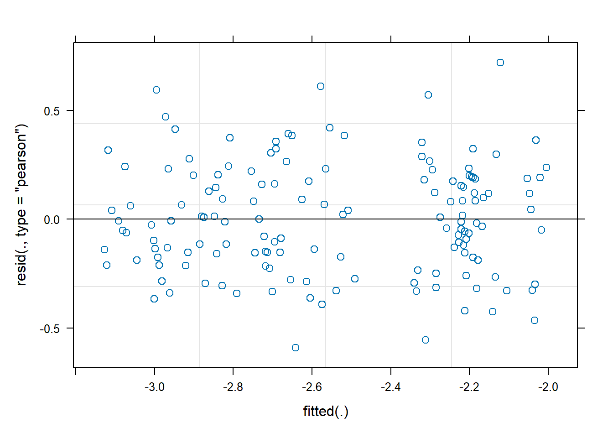
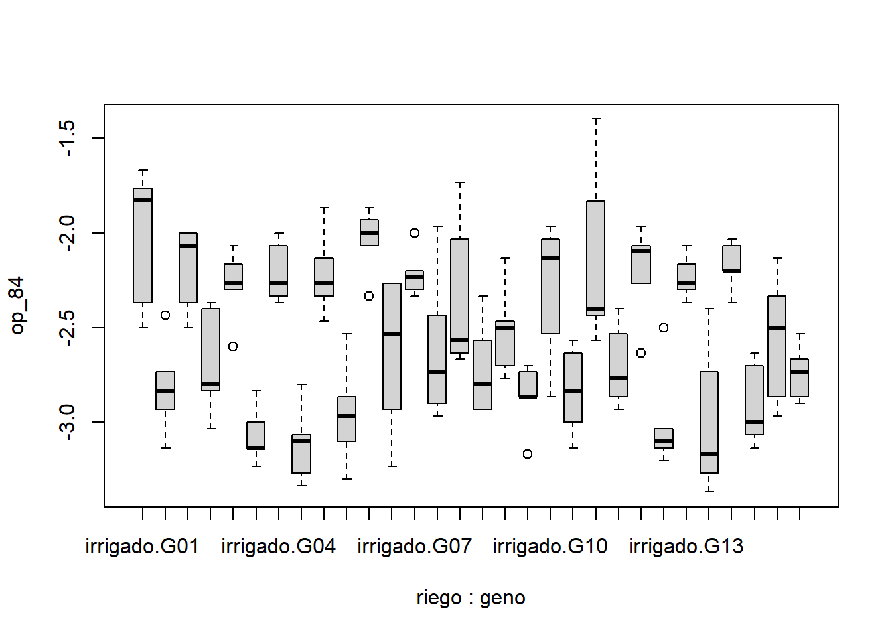

ggplot(fb, aes(x = geno, y = op_84, colour = riego)) +geom_boxplot(outlier.colour ="red", outlier.shape =16, outlier.size =2) +labs(title ="Boxplot con interacción de niveles de riego y genotipo", x ="Interacción Riego y Genotipo",y ="Valor de la variable respuesta") +theme_minimal() +theme(axis.text.x =element_text(angle =45, hjust =1))
modelo lineal mixto para op_84
library(lme4)modelo <-lmer(formula = op_84 ~ riego + geno + riego*geno + (1|bloque), data = fb)anova(modelo)## Analysis of Variance Table## npar Sum Sq Mean Sq F value## riego 1 13.5240 13.5240 171.0168## geno 14 1.7623 0.1259 1.5918## riego:geno 14 1.5103 0.1079 1.3642plot(modelo)

ol <-boxplot(op_84 ~ riego * geno, data = fb)

ol## $stats## [,1] [,2] [,3] [,4] [,5] [,6] [,7]## [1,] -2.500000 -3.133333 -2.500000 -3.033333 -2.300000 -3.233333 -2.366667## [2,] -2.366667 -2.933333 -2.366667 -2.833333 -2.300000 -3.133333 -2.333333## [3,] -1.830000 -2.833333 -2.066667 -2.800000 -2.266667 -3.133333 -2.266667## [4,] -1.766667 -2.733333 -2.000000 -2.400000 -2.166667 -3.000000 -2.066667## [5,] -1.666667 -2.733333 -2.000000 -2.366667 -2.066667 -2.833333 -2.000000## [,8] [,9] [,10] [,11] [,12] [,13] [,14]## [1,] -3.333333 -2.466667 -3.300000 -2.066667 -3.233333 -2.333333 -2.966667## [2,] -3.266667 -2.333333 -3.100000 -2.066667 -2.933333 -2.300000 -2.900000## [3,] -3.100000 -2.266667 -2.966667 -2.000000 -2.533333 -2.233333 -2.733333## [4,] -3.066667 -2.133333 -2.866667 -1.930000 -2.266667 -2.200000 -2.433333## [5,] -2.800000 -1.866667 -2.533333 -1.866667 -2.266667 -2.200000 -1.966667## [,15] [,16] [,17] [,18] [,19] [,20] [,21]## [1,] -2.666667 -2.933333 -2.766667 -2.866667 -2.866667 -3.133333 -2.566667## [2,] -2.633333 -2.933333 -2.700000 -2.866667 -2.533333 -3.000000 -2.433333## [3,] -2.566667 -2.800000 -2.500000 -2.866667 -2.133333 -2.833333 -2.400000## [4,] -2.033333 -2.566667 -2.466667 -2.733333 -2.033333 -2.633333 -1.833333## [5,] -1.733333 -2.333333 -2.133333 -2.700000 -1.966667 -2.566667 -1.400000## [,22] [,23] [,24] [,25] [,26] [,27] [,28]## [1,] -2.933333 -2.266667 -3.200000 -2.366667 -3.366667 -2.366667 -3.133333## [2,] -2.866667 -2.266667 -3.133333 -2.300000 -3.266667 -2.200000 -3.066667## [3,] -2.766667 -2.100000 -3.100000 -2.266667 -3.166667 -2.200000 -3.000000## [4,] -2.533333 -2.066667 -3.033333 -2.166667 -2.733333 -2.066667 -2.700000## [5,] -2.400000 -1.966667 -3.033333 -2.066667 -2.400000 -2.033333 -2.633333## [,29] [,30]## [1,] -2.966667 -2.900000## [2,] -2.866667 -2.866667## [3,] -2.500000 -2.733333## [4,] -2.333333 -2.666667## [5,] -2.133333 -2.533333## ## $n## [1] 5 5 5 5 5 5 5 5 5 5 5 5 5 5 5 5 5 5 5 5 5 5 5 5 5 5 5 5 5 5## ## $conf## [,1] [,2] [,3] [,4] [,5] [,6] [,7]## [1,] -2.253958 -2.974653 -2.325752 -3.106192 -2.360880 -3.227546 -2.455093## [2,] -1.406042 -2.692014 -1.807581 -2.493808 -2.172454 -3.039120 -2.078241## [,8] [,9] [,10] [,11] [,12] [,13] [,14]## [1,] -3.241319 -2.407986 -3.131539 -2.096568 -3.004398 -2.303993 -3.063079## [2,] -2.958681 -2.125347 -2.801794 -1.903432 -2.062268 -2.162674 -2.403588## [,15] [,16] [,17] [,18] [,19] [,20] [,21]## [1,] -2.990625 -3.059086 -2.664873 -2.960880 -2.486632 -3.092419 -2.823958## [2,] -2.142708 -2.540914 -2.335127 -2.772454 -1.780035 -2.574248 -1.976042## [,22] [,23] [,24] [,25] [,26] [,27] [,28]## [1,] -3.002199 -2.241319 -3.17066 -2.360880 -3.543519 -2.294213 -3.259086## [2,] -2.531134 -1.958681 -3.02934 -2.172454 -2.789815 -2.105787 -2.740914## [,29] [,30]## [1,] -2.876852 -2.874653## [2,] -2.123148 -2.592014## ## $out## [1] -2.433333 -2.600000 -2.333333 -2.000000 -3.166667 -2.633333 -2.500000## ## $group## [1] 2 5 11 13 18 23 24## ## $names## [1] "irrigado.G01" "sequia.G01" "irrigado.G02" "sequia.G02" "irrigado.G03"## [6] "sequia.G03" "irrigado.G04" "sequia.G04" "irrigado.G05" "sequia.G05" ## [11] "irrigado.G06" "sequia.G06" "irrigado.G07" "sequia.G07" "irrigado.G08"## [16] "sequia.G08" "irrigado.G09" "sequia.G09" "irrigado.G10" "sequia.G10" ## [21] "irrigado.G11" "sequia.G11" "irrigado.G12" "sequia.G12" "irrigado.G13"## [26] "sequia.G13" "irrigado.G14" "sequia.G14" "irrigado.G15" "sequia.G15"library(inti)model <-remove_outliers(data = fb,formula = spad_29 ~ riego + geno + riego*geno + (1|bloque),plot_diag =TRUE)model## $data## $data$raw## # A tibble: 150 × 5## index riego geno bloque spad_29## <chr> <chr> <chr> <chr> <dbl>## 1 1 sequia G01 II 56.3## 2 2 sequia G02 IV 52.7## 3 3 irrigado G01 III 49.2## 4 4 sequia G02 I 55.5## 5 5 irrigado G03 II 58.2## 6 6 irrigado G04 V 43.5## 7 7 irrigado G01 I 57.4## 8 8 irrigado G05 IV 56.1## 9 9 sequia G06 II 61 ## 10 10 sequia G05 I 60.3## # ℹ 140 more rows## ## $data$clean## index riego geno bloque spad_29## 1 1 sequia G01 II 56.30## 2 2 sequia G02 IV 52.70## 3 3 irrigado G01 III 49.20## 4 4 sequia G02 I 55.50## 5 5 irrigado G03 II 58.20## 6 6 irrigado G04 V 43.50## 7 7 irrigado G01 I 57.40## 8 8 irrigado G05 IV 56.10## 9 9 sequia G06 II 61.00## 10 10 sequia G05 I 60.30## 11 11 irrigado G01 II 58.90## 12 12 sequia G07 II 65.50## 13 13 irrigado G08 II 61.30## 14 14 irrigado G06 III 64.30## 15 15 irrigado G09 III 57.10## 16 16 irrigado G10 II 56.00## 17 17 sequia G11 I 58.00## 18 18 sequia G12 III 52.90## 19 19 irrigado G07 I 56.40## 20 20 irrigado G04 II 48.80## 21 21 irrigado G13 II 60.70## 22 22 irrigado G14 III 64.90## 23 23 irrigado G04 IV 51.10## 24 24 sequia G04 V 46.90## 25 25 sequia G08 V 64.20## 26 26 sequia G04 III 45.80## 27 27 sequia G01 IV 58.80## 28 28 irrigado G10 I 53.30## 29 29 irrigado G08 V 62.80## 30 30 irrigado G02 V 51.40## 31 31 irrigado G07 III 59.50## 32 32 irrigado G08 I 56.40## 33 33 irrigado G14 V 61.80## 34 34 irrigado G03 I 59.60## 35 35 sequia G13 III 55.60## 36 36 sequia G01 V 58.60## 37 37 sequia G03 I 58.70## 38 38 irrigado G15 III 56.00## 39 39 irrigado G03 IV 57.30## 40 40 irrigado G09 IV 52.10## 41 41 irrigado G11 II 63.90## 42 42 sequia G03 V 48.90## 43 43 sequia G11 III 64.20## 44 44 irrigado G06 V 54.90## 45 45 sequia G05 V 56.50## 46 46 sequia G08 IV 64.20## 47 47 irrigado G11 IV 62.10## 48 48 sequia G11 II 62.70## 49 49 irrigado G10 III 55.20## 50 50 sequia G06 IV 53.30## 51 51 sequia G09 I 43.90## 52 52 irrigado G11 I 60.80## 53 53 sequia G11 IV 58.60## 54 54 irrigado G15 IV 54.40## 55 55 irrigado G13 IV 64.40## 56 56 sequia G14 V 56.90## 57 57 irrigado G02 IV 52.60## 58 58 irrigado G09 II 51.10## 59 59 irrigado G02 III 51.60## 60 60 sequia G08 III 64.50## 61 61 irrigado G06 II 63.90## 62 62 sequia G13 IV 59.50## 63 63 sequia G14 III 57.10## 64 64 sequia G04 II 45.20## 65 65 irrigado G11 III 63.90## 66 66 irrigado G07 II 57.70## 67 67 irrigado G08 IV 60.70## 68 68 sequia G05 IV 53.00## 69 69 irrigado G04 I 43.80## 70 70 irrigado G11 V 62.00## 71 71 irrigado G12 I 50.00## 72 72 sequia G14 IV 59.30## 73 73 sequia G07 III 54.00## 74 74 irrigado G03 III 60.23## 75 75 sequia G01 I 54.00## 76 76 sequia G04 I 47.90## 77 77 sequia G03 II 56.50## 78 78 irrigado G15 II 54.40## 79 79 sequia G12 IV 51.60## 80 80 sequia G12 I 56.30## 81 81 sequia G08 I 60.00## 82 82 sequia G05 II 53.40## 83 83 sequia G02 II 53.10## 84 84 sequia G10 I 58.10## 85 85 sequia G15 I 53.30## 86 86 irrigado G07 V 60.80## 87 87 sequia G10 V 56.90## 88 88 sequia G13 II 59.50## 89 89 sequia G07 V 62.40## 90 90 sequia G03 III 57.80## 91 91 sequia G15 IV 52.30## 92 92 sequia G13 I 59.80## 93 93 sequia G03 IV 57.20## 94 94 irrigado G10 V 61.00## 95 95 sequia G13 V 61.10## 96 96 sequia G09 II 51.70## 97 97 irrigado G14 IV 58.90## 98 98 irrigado G01 V 48.90## 99 99 sequia G01 III 53.30## 100 100 irrigado G06 IV 64.70## 101 101 sequia G04 IV 48.20## 102 102 irrigado G15 V 59.60## 103 103 irrigado G13 III 54.80## 104 104 irrigado G02 II 51.00## 105 105 sequia G08 II 63.10## 106 106 irrigado G04 III 48.10## 107 107 sequia G02 V 57.80## 108 108 sequia G06 V 58.30## 109 109 irrigado G15 I 58.20## 110 110 irrigado G13 V 58.70## 111 111 irrigado G05 V 57.10## 112 112 sequia G09 III 52.20## 113 113 sequia G09 V 49.80## 114 114 sequia G10 II 51.40## 115 115 irrigado G07 IV 54.00## 116 116 irrigado G05 I 51.90## 117 117 irrigado G02 I 52.70## 118 118 sequia G05 III 55.20## 119 119 irrigado G12 II 56.50## 120 120 sequia G15 III 54.80## 121 121 irrigado G13 I 57.80## 122 122 sequia G14 II 62.50## 123 123 sequia G12 II 47.00## 124 124 sequia G15 II 53.80## 125 125 irrigado G09 V 47.20## 126 126 sequia G06 I 59.70## 127 127 sequia G09 IV 54.70## 128 128 sequia G15 V 53.30## 129 129 irrigado G14 I 57.00## 130 130 sequia G06 III 64.20## 131 131 irrigado G01 IV 55.20## 132 132 irrigado G12 III 58.70## 133 133 sequia G12 V 56.30## 134 134 irrigado G12 V 54.80## 135 135 sequia G11 V 57.80## 136 136 irrigado G12 IV 57.70## 137 137 irrigado G09 I 49.70## 138 138 sequia G02 III 51.90## 139 139 sequia G07 I 60.30## 140 140 irrigado G08 III 62.40## 141 141 irrigado G06 I 60.50## 142 142 irrigado G10 IV 53.90## 143 143 irrigado G03 V 57.80## 144 144 sequia G07 IV 57.50## 145 145 irrigado G05 III 57.20## 146 146 sequia G14 I 58.30## 147 147 sequia G10 III 54.30## 148 148 irrigado G14 II 62.30## 149 149 irrigado G05 II 58.50## 150 150 sequia G10 IV 54.20## ## ## $outliers## [1] index riego geno bloque spad_29 resi ## [7] res_MAD rawp.BHStud adjp bholm out_flag ## <0 rows> (o 0- extensión row.names)## ## $diagplot
library(ggplot2)library(dplyr)library(tidyr)ggplot(grupos, aes(x = geno, y = op_84 , fill = riego)) +geom_bar(stat ="identity", position ="dodge", color ="black") +labs(x ="Genotipo", y ="spad_29", fill ="Riego") +theme_minimal() +theme(axis.text.x =element_text(angle =45, hjust =1)) +ggtitle("Gráfico de barras: op_84 por genotipo y riego") +geom_text(aes(label =substr(geno, 1, 2)), # Mostrar solo las primeras 2 letras de la columna 'geno'position =position_dodge(0.9), vjust =-0.5) # Ajusta la posición vertical de las letras
# Convertir 'cm2' en un dataframe y renombrar la columna de significanciadtcm <-as.data.frame(cm2) %>%rename(sig =".group")# Crear el gráfico de barrasggplot(dtcm, aes(x = geno, y = emmean, fill = riego)) +geom_bar(stat ="identity", position ="dodge", color ="black") +geom_text(aes(label = sig, y = emmean),position =position_dodge(width =0.9),vjust =-0.5) +# Ajustar posición vertical de las letraslabs(x ="Genotipo", y ="op_84", fill ="Riego") +theme_minimal() +theme(axis.text.x =element_text(angle =45, hjust =1)) +ggtitle("Gráfico de barras: op_84 por genotipo y riego") +scale_y_reverse() # Invertir el eje Y